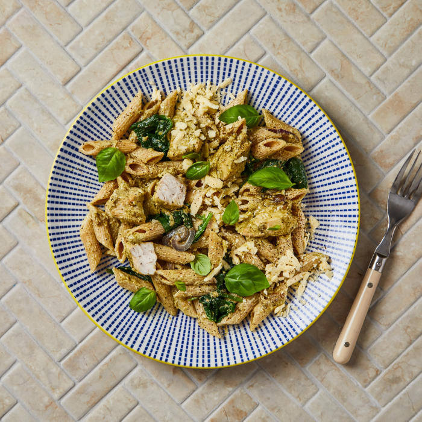

Creamy Chicken and Pesto Tortiglioni

Description
For this simple, comforting pasta dish, you’ll whip up a creamy pesto
sauce with succulent chicken, spinach, red onion and nutritious wholewheat
tortiglioni. Sprinkle with cheese, and serve!
Ingredients
- Red onion
- British chicken breast strips (250g)
- Cheddar Cheese (40g)
- Wholewheat tortiglioni (150g)
- Traditional Italian pesto (40g)
- Basil (10g)
- Chicken stock mix (5.5g)
- Soft cheese (50g)
- Spinach (80g)
Steps
-
Before you start cooking, take your chicken out of the fridge, open the
packet and let it air, then boil a kettle. Add your wholewheat
tortiglioni to a pot of boiled water with a pinch of salt, bring to the
boil over a high heat and cook for 10-12 min or until cooked with a
slight bite. Once done, drain and reserve about 200ml [300ml] [400ml]
starchy pasta water.
-
While the pasta is cooking, peel and finely slice your red onion[s]. Cut
your chicken breast strips into bite-sized pieces.
-
Heat a large, wide-based pan (preferably non-stick) with a drizzle of
vegetable oil over a medium heat. Once hot, add the sliced red onion
with a pinch of salt and cook for 2-3 min or until starting to soften.
-
Once starting to soften, increase the heat to high, add the chopped
chicken and cook for 10-12 min or until golden and cooked through (no
pink meat!).
-
Chop most of your basil, including the stalks (save some whole leaves
for garnish!). Grate your cheddar cheese.
-
Once done, add the drained wholewheat tortiglioni to the pan with the
chicken and onion. Add your chicken stock mix with the chopped basil,
soft cheese, pesto, half the grated cheese (save the rest for
garnish!)and 100ml [150ml][200ml] reserved starchy pasta water. Give
everything a good mix up and cook for 1-2 min or until the sauce is
creamy and starting to thicken.
-
Wash your spinach, then pat dry with kitchen paper Add the spinach and
stir through until wilted – this is your creamy chicken & pesto
wholewheat tortiglioni. Tip: If the sauce is looking a little dry add a
splash more starchy cooking water. Serve the creamy chicken & pesto
wholewheat tortiglioni. Garnish with the remaining grated cheese and
reserved basil leaves. Enjoy!
Home